Galicia
Guía para amigos que quieren descubrirla con calma
Recomendaciones
Lo que nadie te cuenta para disfrutar Galicia de verdad.

🧥 Trae una prenda de abrigo. Siempre.
Aunque vengas en agosto y veas sol en la previsión, en Galicia refresca al caer la tarde, sobre todo cerca del mar.
No es drama, pero se agradece no acabar comprando una sudadera de emergencia.

🌦️ La lluvia no avisa.
No es que llueva todo el día; es peor (o mejor): puede llover cinco minutos, parar, salir el sol… y repetir. Incluso te puede pillar justo cuando te pones el bañador.
Un chubasquero ligero suele ser mejor idea que un paraguas. Y ojo, en verano también hay días de tiempo espectacular.

🌫️ El clima cambia en horas.
Puedes salir con cielo despejado y encontrarte niebla cerrada en la costa en media hora. Galicia no tiene un clima: tiene varios a la vez.
Si vas a la playa, consulta la meteorología (viento, niebla, mar) porque puede estar perfecto tierra adentro y torcerse en la costa.

🍽️ Ven con hambre.
Las raciones no son simbólicas. Aquí se come en serio, y repetir no está mal visto.
En invierno, además, los platos son especialmente contundentes.

🧭 No planifiques demasiado.
Galicia no encaja bien con horarios rígidos. Muchas veces lo mejor aparece sin buscarlo.
Deja hueco para improvisar: suele ser ahí donde aciertas.

🗣️ El gallego existe (y se usa).
Escucharás palabras distintas, y es parte del viaje. Es nuestra identidad y nuestra lengua… y si quieres, también puede ser un poco la tuya.
Decir “boas” o “grazas” suma puntos.

❓ Pregunta sin miedo.
La gente puede parecer seca al principio, pero si preguntas, te ayudan. Y muchas veces, mejor que cualquier app.
Prepárate, eso sí, para respuestas tipo: “depende”, “puede ser”… ayudamos, pero a nuestra manera.

📅 Ojo con las reservas.
En sitios conocidos o en verano, reserva. Donde menos te lo esperas, se llena.
Algunos lugares muy demandados requieren antelación: Islas Cíes y Ons, el Pórtico de la Gloria o la Playa de las Catedrales.

🧍 Los gallegos no somos bordes, somos prudentes.
No esperes entusiasmo inmediato. Aquí primero se observa, luego se confía.
Pero cuando entras, entras de verdad.

🥖 El pan importa. Mucho.
No es un simple acompañamiento. En serio: si el pan falla, desconfía.
Top 3:
- Pan de Cea: el tradicional, horno de leña.
- Pan de Carral: “molete” con moño.
- Pan de Neda: corteza gruesa y durabilidad asegurada.
- Pan de O Porriño: famoso por sus bollas.
💡 Consejo: buen pan puedes encontrarlo en casi cualquier rincón de Galicia.
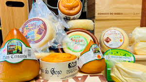
🧀 Quesos con carácter
Entra en cualquier taberna con buena pinta y pide una tabla de quesos gallegos.
Desde el cremoso hasta el ahumado: prueba sin prejuicios, algunos sorprenden mucho.

🥟 Empanada: simple en apariencia, seria en ejecución
Clásicas: bonito, bacalao con pasas o zamburiñas, pero también hay versiones con cualquier producto local. La masa varía según la zona.
Ideal para un picnic improvisado o como sustituto del bocadillo.

🐙 Pulpo: menos espectáculo, más respeto
Solo necesita sal, aceite y pimentón. Si está duro… no vuelvas. Para garantías, busca una buena pulpeira.
El pulpo á feira es la opción clásica y casi siempre la mejor.

🐖 Raxo y zorza: el cerdo bien tratado
Platos sencillos y sabrosos, raciones estrella de las tabernas gallegas.
Perfectos para compartir o como plato único.
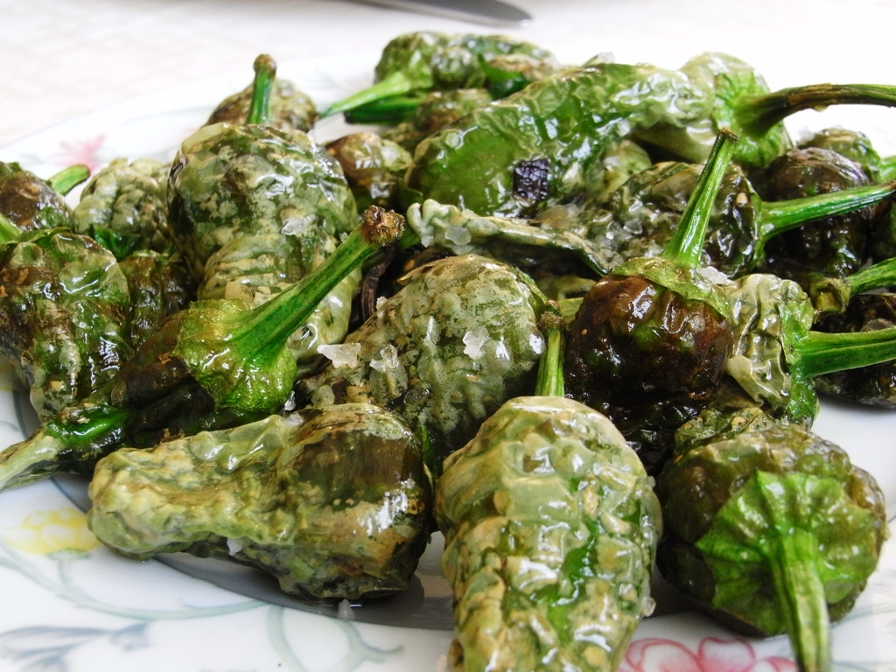
🌶️ Pimientos: una ruleta
“Unos pican, otros no”. Los auténticos pimientos de Padrón se cultivan en Herbón.
No todos los que se encuentran fuera de Galicia son reales. Aprovecha mientras estás aquí.

🐟 Pescados: Galicia habla claro
Merluza, rodaballo, lubina… frescos y sin adornos innecesarios.
A la brasa, en caldeirada o directo de la ría: sencillo y delicioso.
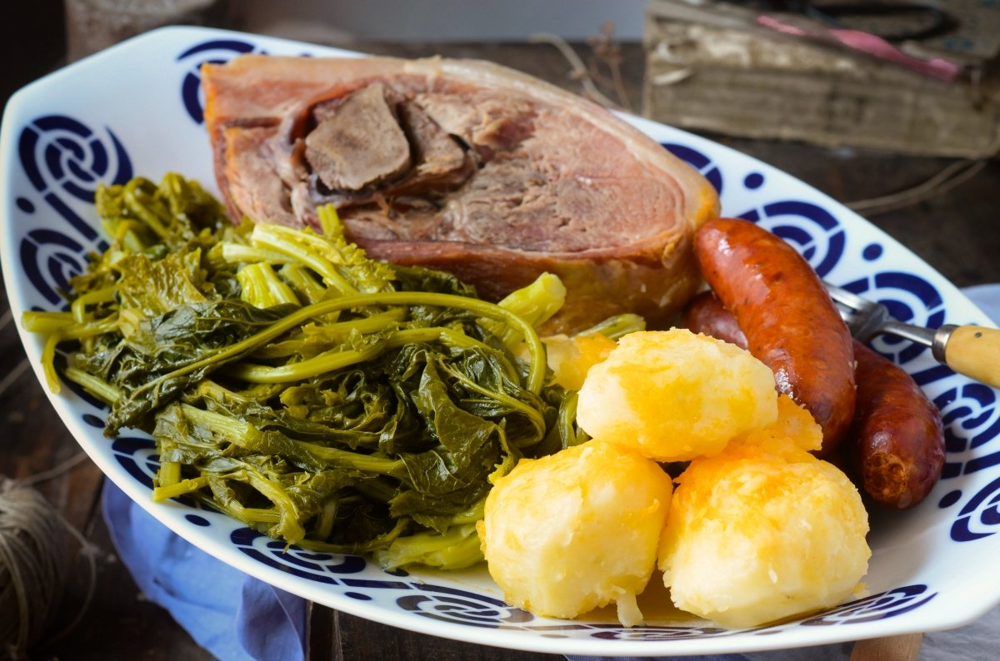
🥬 Lacón con grelos: contundente
No es ligero, pero es Galicia en plato.
Plato de temporada: si aparece en la carta, pídelo sin dudar.

🥩 Ternera Gallega: otra liga
Carne con sabor real.
Poco más que decir: prepárate para disfrutar… y para abrir la cartera si quieres lo mejor.

🦐 Marisco: cuando es bueno, se nota
Y cuando no, también. No todo vale: busca locales con producto fresco y buena rotación.
Para una experiencia de verdad, calcula no menos de 70 € por persona. La tarjeta es casi obligatoria, pero cada bocado lo vale.
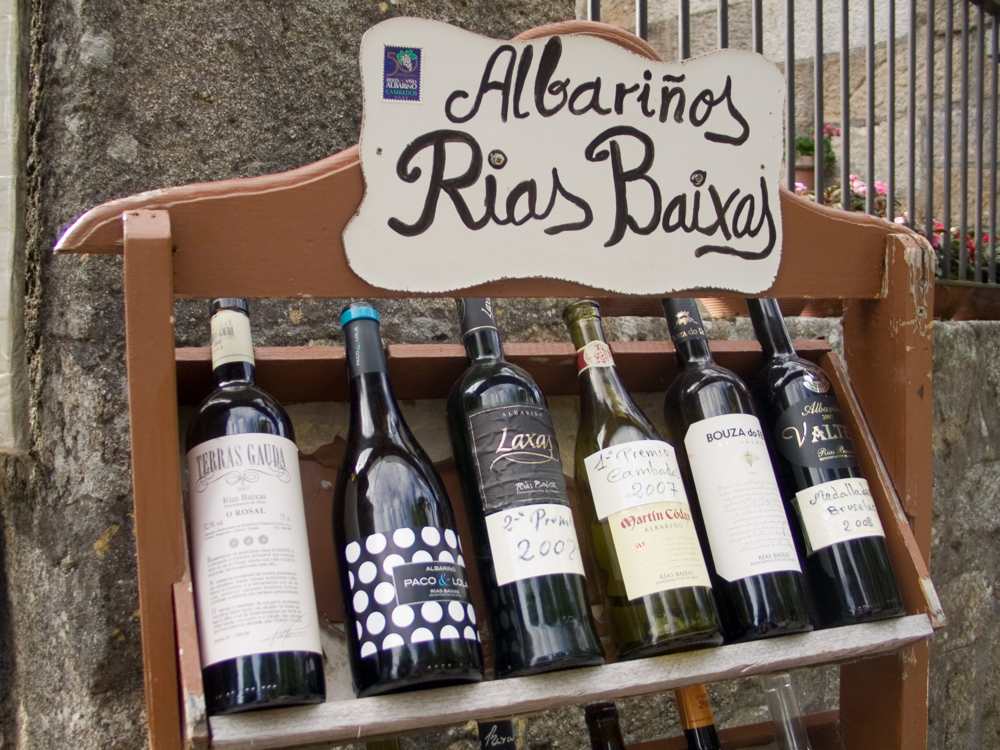
🍇 Albariño: fácil de entender, difícil de olvidar
Fresco, aromático y muy agradecido. Se cultiva en las Rías Baixas, donde el clima atlántico le da ese punto ácido y salino.
👉 Cuándo: comida al mediodía, días de calor.
👉 Con qué: marisco, pescado, arroces.
👉 Cómo: frío, pero no helado.
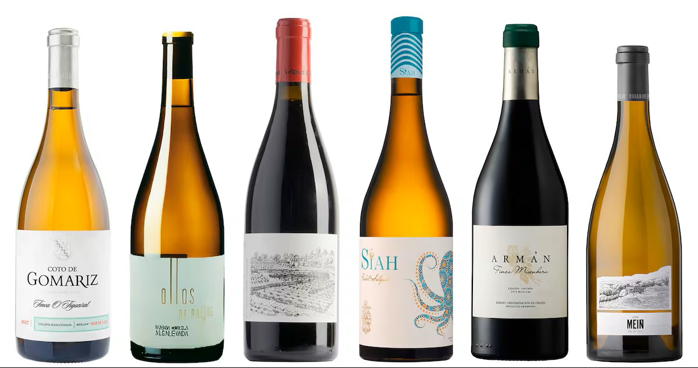
🍷 Ribeiro: el clásico que vuelve
Histórico y con personalidad. Fue uno de los vinos más exportados en la Edad Media. Hoy vuelve con fuerza.
👉 Cuándo: comidas largas, sin prisa.
👉 Con qué: cocina tradicional, pulpo, carnes suaves.
👉 Cómo: déjalo abrirse un poco, gana mucho.
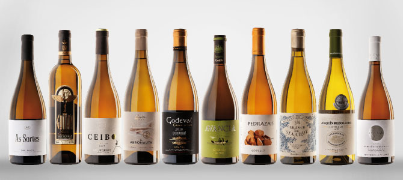
🍾 Godello: un paso más
Más estructura y profundidad. Recuperado hace relativamente poco, ahora juega en primera división.
👉 Cuándo: cenas, cuando quieres algo más serio.
👉 Con qué: pescados potentes, carnes blancas.
👉 Cómo: temperatura media, no demasiado frío.
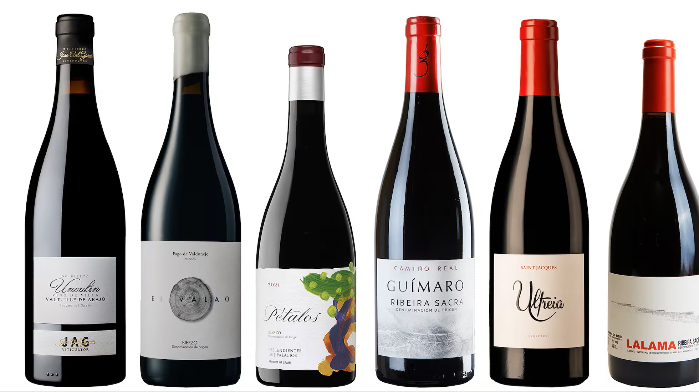
🍷 Mencía: el tinto gallego
Ligero, afrutado, muy bebible. Especialmente en Ribeira Sacra.
👉 Cuándo: tarde-noche, tapeo o cena informal.
👉 Con qué: raxo, zorza, embutidos.
👉 Cómo: ligeramente fresco, incluso en verano.
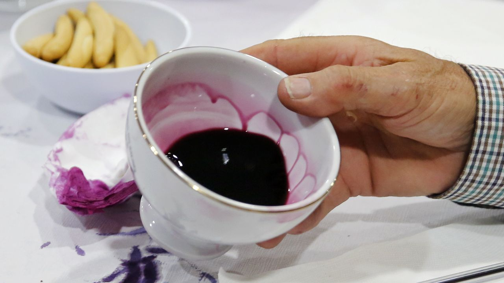
🍶 Barrantes: el raro
Turbio, ácido, muy local. Vino de casa, sin filtros.
👉 Cuándo: taberna, sin postureo.
👉 Con qué: marisco, empanada.
👉 Cómo: sin pensar demasiado, se bebe y ya.
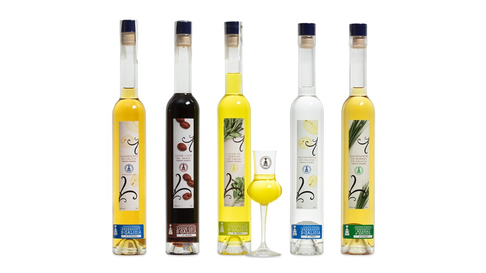
🥃 Licores: cuidado que engañan
De hierbas o de café, a partir de aguardiente tradicional.
👉 Cuándo: después de comer.
👉 Con qué: sobremesa, conversación larga.
👉 Cómo: despacio… aunque no lo parezca.
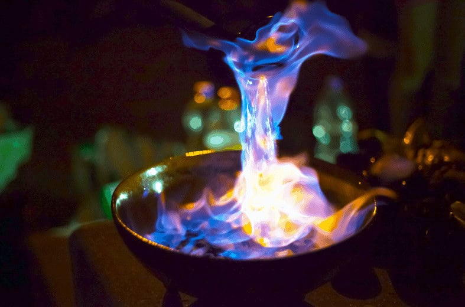
🔥 Queimada: no es solo beber
Ritual con fuego y “conxuro” incluido. Tradición pura.
👉 Cuándo: de noche.
👉 Con qué: grupo, ambiente, ganas de alargar.
👉 Cómo: sin prisas. Es experiencia, no solo bebida.
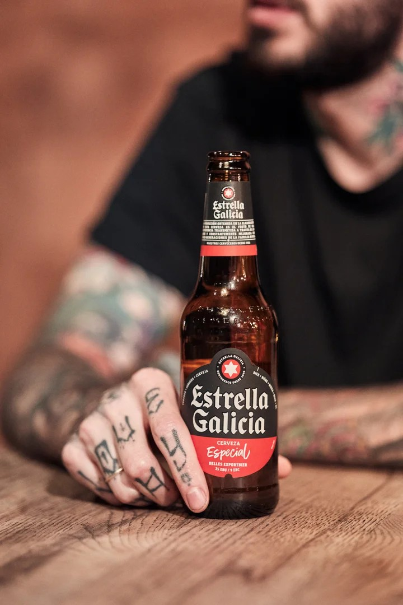
🍺 Estrella Galicia: juega en casa
Clásica, constante, parte del día a día desde 1906.
👉 Cuándo: siempre.
👉 Con qué: cualquier tapa, cualquier momento.
👉 Cómo: bien tirada y fría. No tiene más misterio.
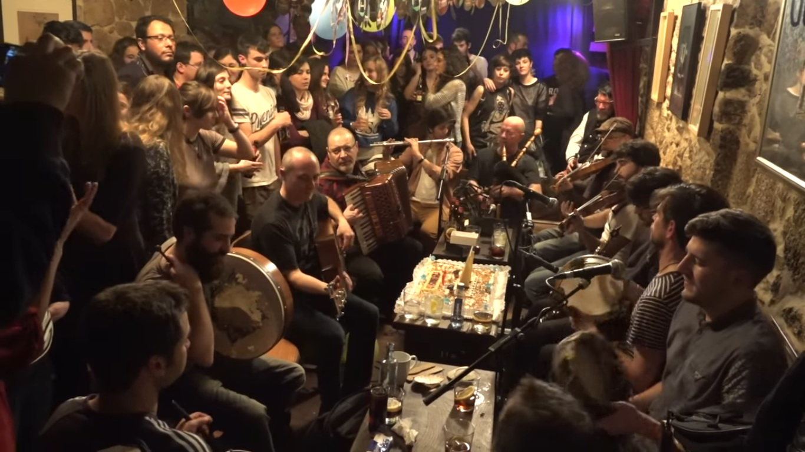
💡 Clave general:
En Galicia no se bebe rápido. Se bebe acompañando, conversando y comiendo. Si tienes prisa, te estás perdiendo la mitad.

🗺️ No midas en kilómetros, mide en tiempo
Las distancias engañan.
👉 Regla: 50 km pueden ser 1 hora o más.
👉 Error típico: querer ver demasiado en un día.

🚗 Sin coche, te pierdes Galicia
El transporte público no llega a todo.
👉 Regla: alquila coche si quieres libertad.
👉 Ganancia: acceso a sitios que no salen en ninguna guía.

📍 El GPS no siempre tiene razón
Te puede meter por carreteras estrechas o caminos raros.
👉 Regla: si dudas, no sigas a ciegas.
👉 Mejor opción: parar y preguntar.
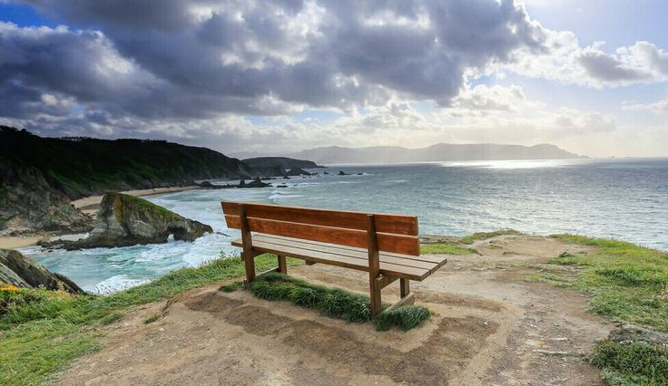
📸 Si ves un mirador, párate
No todos salen en Google.
👉 Regla: si hay hueco para parar, para.
👉 Resultado: muchas veces, lo mejor del día.
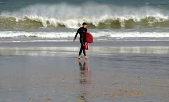
🌊 El mar aquí impone
Especialmente en costa abierta.
👉 Regla: respeta las olas y las corrientes.
👉 Error típico: confiarse en playas salvajes.
👉 Aviso: esto es el Atlántico. No es una broma.
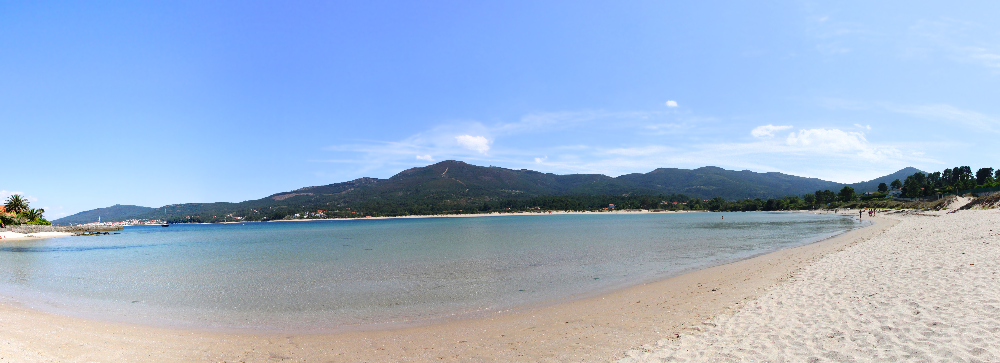
🏖️ No todas las playas son iguales
Ría ≠ océano.
👉 Rías: más tranquilas, familiares.
👉 Abiertas: más espectaculares, pero más exigentes.

🌗 Mira las mareas antes de ir
Cambian completamente el paisaje.
👉 Regla: consulta mareas si vas a calas o playas largas.
👉 Ejemplo: puedes quedarte sin arena… o sin salida. Incluso sin coche.
👉 Prueba: busca “Galicia coche marea”. Vas a flipar.
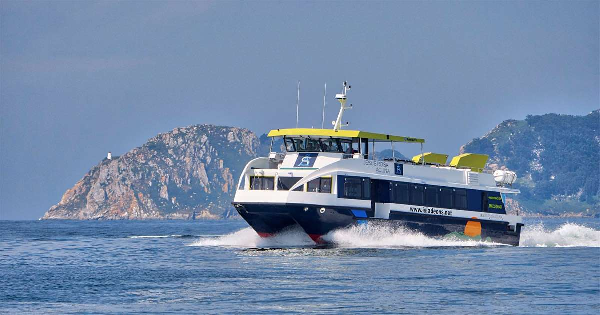
⛴️ Cruza la ría en barco si puedes
Algunas rías permiten cruzar en transporte público marítimo, como en Ferrol o Vigo.
👉 Regla: no es solo transporte, es parte del viaje.
👉 Experiencia: ver la costa desde el agua cambia completamente la perspectiva.
👉 Ejemplo: la línea Moaña–Vigo es rápida, barata y muy recomendable.

🍻 Aquí chiringuitos, pocos
No esperes servicios en todas las playas.
👉 Realidad: muchas están prácticamente vírgenes.
👉 Clave: ven preparado. Y sí, a nosotros nos gusta así.
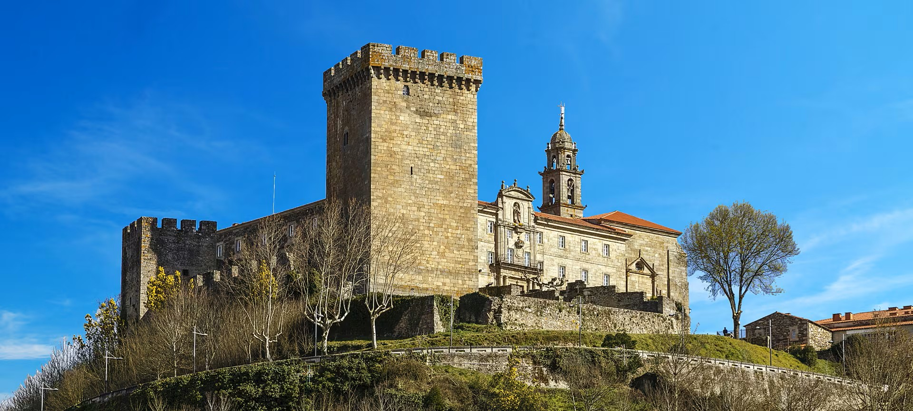
🌿 El interior es otra Galicia
Ríos, bosques, fervenzas.
👉 Regla: no te quedes solo en la costa.
👉 Premio: menos gente, más autenticidad.
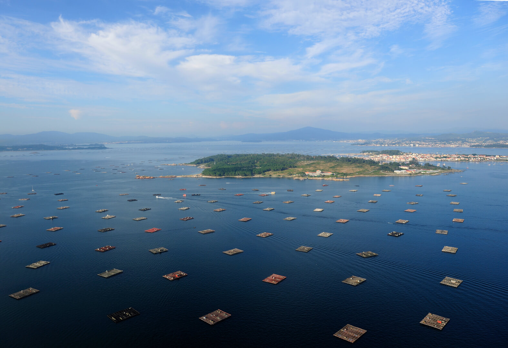
🌊 Las rías lo explican todo
Paisaje, comida, clima.
👉 Regla: si entiendes las rías, entiendes la mitad de Galicia.
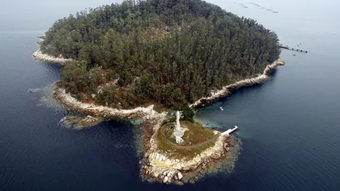
🏝️ Las islas cambian el ritmo
Cíes, Ons… otra velocidad.
👉 Regla: planifica con antelación.
👉 Consejo: si vas, recórrelas. Merece la pena.
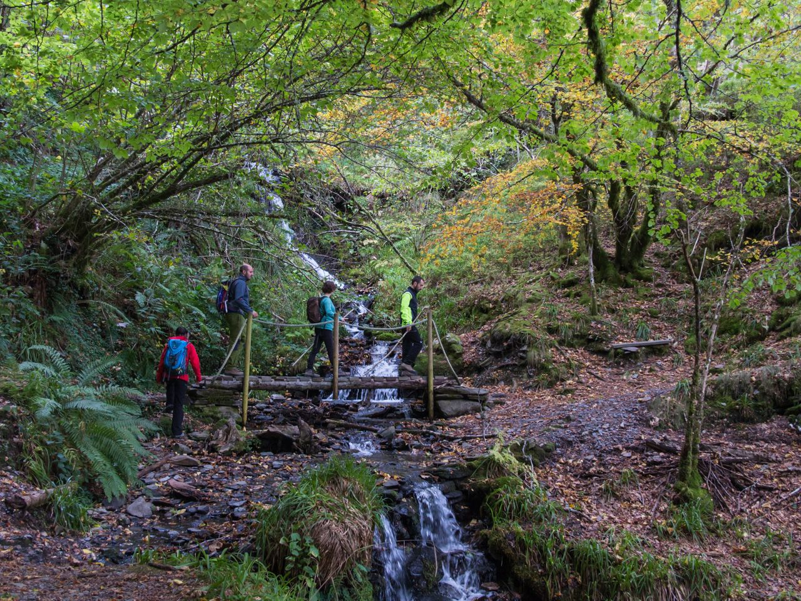
🥾 Caminar es parte del viaje
Galicia no se disfruta solo en coche.
👉 Regla: baja, camina, explora.
👉 Resultado: lo que no ve todo el mundo.
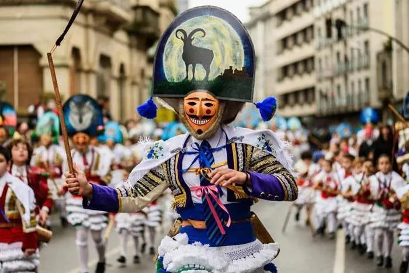
🎉 Si hay fiesta, quédate
Da igual cuál sea.
👉 Regla: si te coincide una, no la esquives.
👉 Realidad: es Galicia en estado puro.
👉 Pista: aquí hay más fiestas que días. Si quieres curiosear, mira: https://festigaleiros.com/
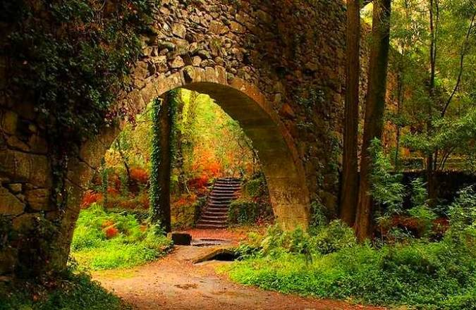
🌫️ Galicia también es mágica
No todo es paisaje.
👉 Regla: escucha y pregunta.
👉 Extra: mouras, mouros, trasgos, meigas, la Santa Compaña… hay más historias que kilómetros.
👉 Clave: la magia, la muerte, el mar y el misterio forman parte de lo que somos.
💡 Clave final:
Disfruta de todo, cuida el entorno, sé buena gente… y vuelve.
💡 ¿Sabías que...? Toca para otra 🔄
Cargando curiosidad...
Lugares de Galicia
4 provincias. Pincha para ver lugares. Marca favoritos con el corazón.
Tu ruta
Toca los números en el mapa para armar tu ruta 👇
💡 Sabías que...
Cargando curiosidad...